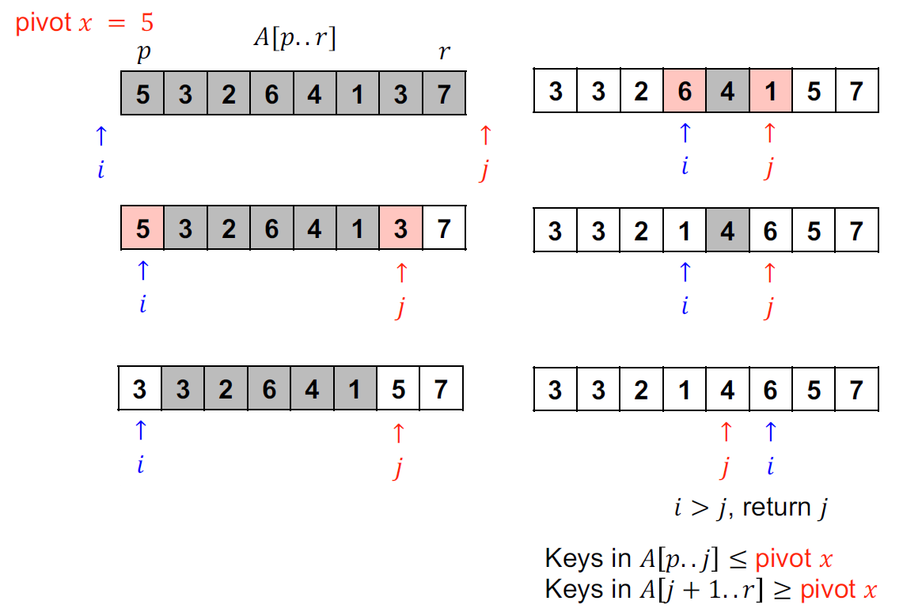
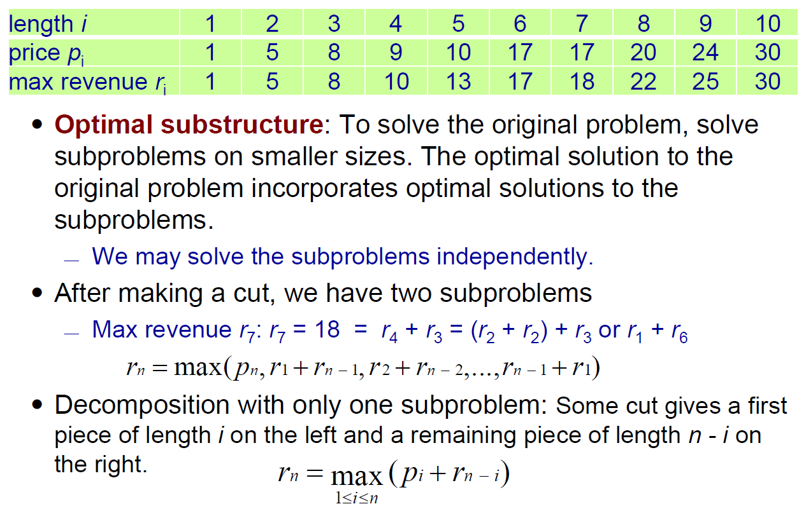
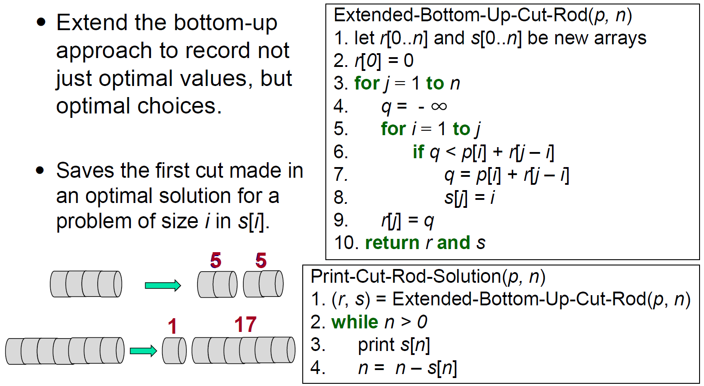
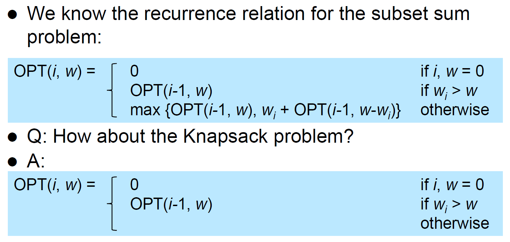
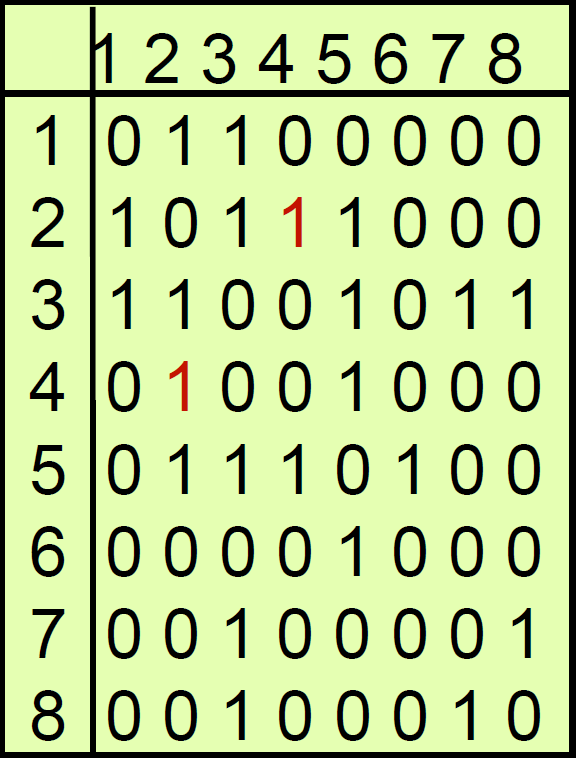
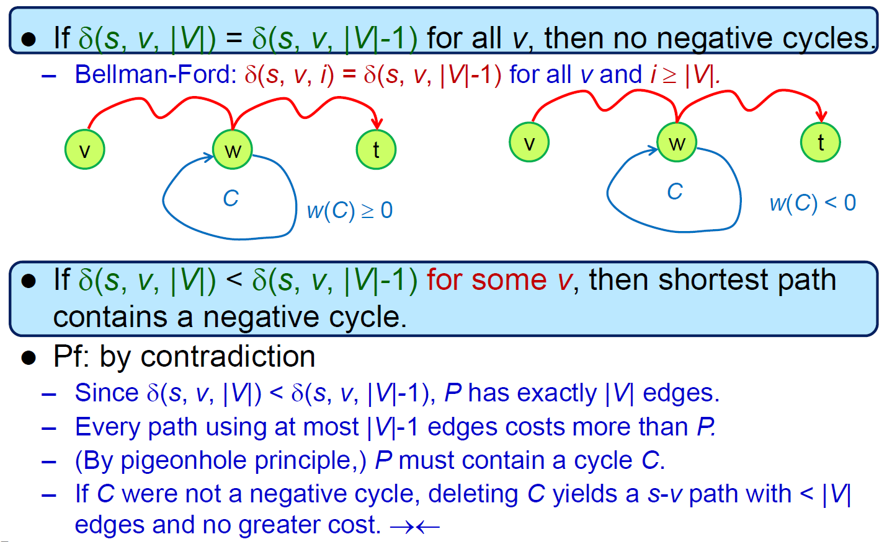
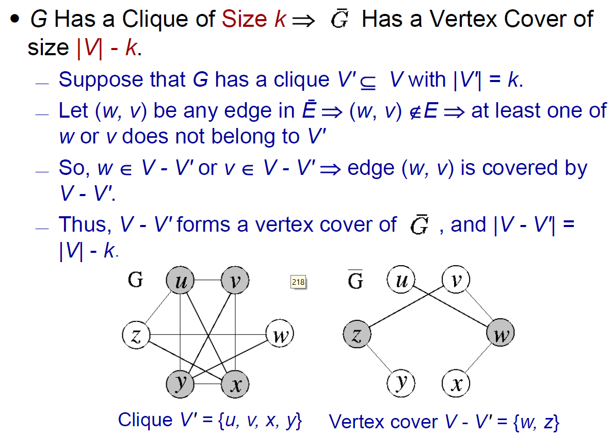

Algorithms¶
resources¶
Solutions to Introduction to Algorithms Third Edition
pseudocode¶
- array position 1-A.length
- for
for i = 1 to A.length
loop invariant¶
- est verda siempre
- pre, peri & post loop iteration
- like math induction
- 3 properties
- initialization
- in for loop, just after the assignment of i, before the boolean test
- maintenance
- termination
- initialization
complexity¶
- time complexity
- steps
- space complexity
- memory requirement
functions¶
- f(n)
- \(f(n) \geq 0\) nonnegative
- \(n \in N\)
- \(f(n)=O(g(n))\)
- upper bound
- \(\exists c>0\) and \(n_0>0\) s.t. \(0\leq f(n)\leq cg(n)\) \(\forall n \geq n_0\)
- \(\lim_{n\rightarrow\infty} \frac{f(n)}{g(n)} \in [0,\infty)(i.e. <\infty)\) if the limit exists
- \(f(n)= \Omega(g(n))\)
- lower bound
- \(\exists c>0\) and \(n_0>0\) s.t. \(0\leq cg(n)\leq f(n)\) \(\forall n \geq n_0\)
- \(\lim_{n\rightarrow\infty} \frac{f(n)}{g(n)} \in (0,\infty](i.e. >0)\) if the limit exists
- \(f(n)=\Theta(g(n))\)
- tight bound, bounded by \(O\) & \(\Omega\)
- \(f(n)=O(g(n))\) and \(f(n)= \Omega(g(n))\)
- \(\exists c_1,c_2>0\) and \(n_0>0\) s.t. \(0\leq c_1g(n) \leq f(n)\leq c_2g(n)\) \(\forall n \geq n_0\)
- \(\lim_{n\rightarrow\infty} \frac{f(n)}{g(n)} \in (0,\infty)\) if the limit exists
- \(f(n)=o(g(n))\)
- untightly upper bound
- \(\forall c>0\) , \(\exists n_0>0\) s.t. \(0\leq f(n)< cg(n)\) \(\forall n \geq n_0\)
- \(\lim_{n\rightarrow\infty} \frac{f(n)}{g(n)} = 0\) if the limit exists
- \(f(n)= \omega(g(n))\)
- untightly lower bound
- \(\forall c>0\) , \(\exists n_0>0\) s.t. \(0\leq cg(n)< f(n)\) \(\forall n \geq n_0\)
- \(\lim_{n\rightarrow\infty} \frac{f(n)}{g(n)} = \infty\) if the limit exists
properties¶
- transitivity
- \(f(n)=\Pi(g(n))\) and \(g(n)=\Pi(h(n))\) \(f(n)=\Pi(h(n))\) for \(\Pi=everything\)
- rule of sums
- \(f(n)+g(n)=\Pi(max\{f(n),g(n)\})\) for \(\Pi=big\)
- rule of products
- \(f_1(n)=\Pi(g_1(n))\) and \(f_2(n)=\Pi(g_2(n))\) \(f_1(n)f_2(n)=\Pi(g_1(n)g_2(n))\) for \(\Pi=everything\)
- transpose symmetry
- \(f(n)=O(g(n))\iff g(n)=\Omega(f(n))\)
- \(f(n)=o(g(n))\iff g(n)=\omega(f(n))\)
- reflexivity
- \(f(n)=\Pi(f(n))\) for \(\Pi=big\)
- symmetry
- \(f(n)=\Theta(g(n))\iff g(n)=\Theta(f(n))\)
notation¶
- \(lgn = log_2n\)
- \(lg^{(i)}n = lglglglg....lgn\)
- \(lg^*n=min\{i\geq0:lg^in\leq1\}\)
- polynomial-time
- \(O(p(n))\), \(p(n)=n^{O(1)}\)
others¶
- input size: size of encoded binary string
- integer n input size = lgn
- BIPS
- billion instruction/operation per second
growth of function examples¶
- ratio limit doesn't exist
- \(f(n)=2^n\)
- \(g(n)=2^n\) if n is even, \(g(n)=2^{n-1}\) otherwise
- Stirling's approximation
- can use it to approximate \((lgn)!\in\Theta(n^{lg(lgn)})>n^k\)
- \(ln(n!)\in \Theta(nlnn)\)
Divide and Conquer¶
- divide into subproblems
- conquer subproblems recursively
- combine the subsolutions into an overall solution
mathematical induction¶
- weak induction
- basis step
- inductive step
- \(P(K) P(K+1)\) \(\forall k\in N\)
- strong induction
- basis step
- inductive step
- \(P(0)\land P(1)\land .... \land P(K) P(K+1)\) \(\forall k\in N\)
- weak induction
- defective chessboard
- \(2^n\times2^n\) chessboard triominoes
- basis step
- inductive step
- triomonoe \(2^{k-1}\times 2^{k-1}\) chessboard
- so k-1 k
- triomonoe \(2^{k-1}\times 2^{k-1}\) chessboard
solve recurence¶
unrolling¶
- iteration
- recursion tree
- do n work and call n/2 4 times at level n
substitution¶
- guess and proof (with strong induction)
- n/2
- recursion tree
- e.g.
- strong induction
- >cn wrong
- lower order term
- ()
Master theorem¶
- Data Structure#Master Theorem
- k or c asymptotic
examples¶
- \(T(n)=T(n/2)+T(n/4)+n\in\Theta(n)\)
- substitution
- 1-(p+q)
- if p+q>1 && p,q>1
- \(2^{log_{1/q} (n)} <= leaves <= 2^{log_{1/p} (n)}\)
merge sort¶
MergeSort(A,p,r) //T(n)
if (p<r) then //1
q=Math.floor((p+r)/2) //1
MergeSort(A,p,q) //T(n/2)
MergeSort(A,q+1,r) //T(n/2)
Merge(A,p,q,r) //n
MergeSort(A,1,A.length)
Merge()
- \(\in \Theta(n)\)
- sort n/2 array sorting n
- memory
- auxiliary array
- pseudo code
-
-
- 4-5: L = array
- 6-7: R = array
- 8-9: L & R
- 10-17: L & R main array
- time complexity \(\in \Theta(nlgn)\)
-
- \(T(n)=T(\lfloor n/2\rfloor)+T(\lceil n/2\rceil)+cn\) \(\because\) n/2
- using unrolling - recursion tree
-
- \(cn(lgn+1)\)
- using substitution
- \(O(nlgn)\)
- basis & inductive
- beats #insertion sort
- properties
- stable
- not in-place
maximum subarray¶
- leetcode maximum subarray
- &&
- \(\Theta(nlgn)\)
Strassen's method¶
matrix multiplication - normal \(\in O(n^3)\) - \(n^2\) elements, each is the sum of \(n\) values - divide into 4 n/2xn/2 - \(\in \Theta(n^{lg8})=\Theta(n^3)\) - - Master theorem - T(n/2) 7 \(\in o(n^3)\) - Strassen's method \(\in \Theta(n^{lg7}) \in o(n^3)\) -
Sorting¶
sorting comparisons¶
- time complexity
- stable
insertion sort¶
void insertion_sort(int x[],int length)//define function
{
int key,i;
for(int j=1;j<length;j++)
{
key=x[j];
i=j-1;
while(x[i]>key && i>=0)
{
x[i+1]=x[i];
i--;
}
x[i+1]=key;
}
}
Quicksort¶
- use divide-and-conquer
- partition
- partition
- (e.g. rightmost)
- array
- return
- \(\Delta i=\)
- return
- loop invariant
- unrestricted:
- swap
- time complexity
- best case \(\in\Theta(nlgn)\)
- worst case \(\in\Theta(n^2)\)
- sorted OR reversely sorted
- practically very good, but asymptotically bad
- best case \(\in\Theta(nlgn)\)
randomized partition¶
- random element
- time complexity
- worst case
- expected \(\in O(nlgn)\)
- method 1
- \(X_q=1/n\)
- sum(T(q-1))=sum(T(n-q))
- q=0, 1
- nlgn
- method 2
- runtime \(\in O(n+X)\)
- n elements max n partitions
- X comparisons
- pivot
- elements
- E[X] = expected X
- \(E[X_{ij}] = z_i\) or \(z_j\) pivot
- method 1
- worst case
Hoarse partition¶
- ====
- i & j
- pseudo code
- 
- loop invariant
- complexity
heapsort¶
heap (priority queue)¶
- Data Structure#bineary heap
- heapify
- percolate down
- worst case
- half full size <= 2n/3
- time complexity
- depth vs. height
- binary tree to max-heap
- bottom-up, percolate up
- build max heap \(\in O(n)\)
- bottom-up heapify
- taylor series
- https://stackoverflow.com/a/18742428/15493213
heapsort¶
- max-heap selection sort
- max-heap delete min i.e. max () bottom-level ()
- time complexity \(\in O(nlgn)\)
- heapify O(lgn)
- iterate n
- in-place
- array
comparison-based sorters¶
- decision tree
- leaf n n! leaves
sorting in linear time¶
 radix & bucket sort use other sorters to do the actual sorting
radix & bucket sort use other sorters to do the actual sorting
counting sort¶
- m <= k k m
- stable
- time complexity \(\in O(n+k)\)
- \(\in O(n)\) if \(k\in O(n)\)
- pseudo-linear time otherwise
radix sort¶
- sort
- stable sorter
- counting sort
- not in-place need more memory
- insertion sort
- fast when size small
- counting sort
- time complexity \(\in O(d(n+k))\)
- n d-digit numbers
- each digit has k possible values
- \(\in O(n)\) if \(d\in O(1)\) & \(k\in O(n)\)
- \(O(nlgn)\) sorter \(O(dnlgn)\)
- stable, in-place or not depends on what sorter used (to sort each digit)
bucket sort¶
- bucket bucket bucket sort combine
- k buckets
- space complexity \(\in O(n+k)\)
- time complexity
- iterate all elements, in each bucket, but will iterate n elements at most
- expected & best case \(\in O(n+k)\)
- worst case \(\in O(n^2)\)
- when all elements go to 1 bucket runtime depends on what sorter used worst case \(\in O(n^2)\)
order statistics¶
ith order statistic = ith smallest element
selection¶
- pseudo code

- q = random element
- time complexity
- expected linear time
- linear time
- linear time
- worst case linear time
- median median median
- procedure #Quicksort median guarantee O(nlogn)
- expected linear time
Trees¶
Binary Tree¶
- see Data Structure#Binary Tree
- tree construction
- worst case \(O(n^2)\)
- average case \(O(nlgn)\)
- height
- worst case \(h\in O(n)\)
- skewed
- best case \(h\in O(lgn)\)
- balanced
- worst case \(h\in O(n)\)
- most operations \(O(h)\)
operations¶
- traversal
- inorder/infix
- preorder/prefix
- postorder/postfix
- inorder/infix
- search
- successor
- node
- right subtree right subtree min
- right subtree predecessor
- irl operation: as in line 3-6
- node
- predecessor
- node
- left subtree left subtree max
- node
- insertion
- deletion
- no children just die
- 1 child
- 2 children successor
Red-Black Tree¶
- see Data Structure#Red-Black Tree
- black height of node x = num of blacks on path to leaf - 1 (not counting x)
- rotation
- inorder preservation
- doubly black deletion 2-3-4 node
Dynamic Programming¶
memoization¶
- top-down
- recursive but if skip
- 3
- pros
- subproblem
iteration¶
- bottom-up
- Data Structure#Dynamic Programming
- pros
- less overhead
keys¶
- optimization problem
- problem
- distinct subs (table size) \(\in\) polynomial
- optimal substructure
- optimal subs optimal overall solution
- overlapping subproblem
- overlap subproblems
weighted interval scheduling¶
- p(j) = largest i < j s.t. i & j are disjoint
- sort by finished time
- jth = max{ j , j i.e. j-1 }

- time complexity \(\in O(n)\)
Rod Cutting¶
- vs. max revenue
- 
- top-down
- \(\in O(n^2)\)
- bottom-up
- \(\in O(n^2)\)
- record choice
- 
Matrix-Chain Multiplication¶
- minimize multiplications
- (axb) x (bxc) ac multiplications
- table mm[i, j] \(A_i\) \(A_j\) min multiplication
- m[i, j+1] loop over + the rest cost min
- time \(\in O(n^3)\)
- space \(\in O(n^2)\)
- bottom-up
- top-down
longest common subsequence¶
- table
- c[i,j] X[1:i] & Y[1:j] LCS
- X.length = m, Y.length = n c[m,n] = X Y overall LCS
- top-down
- bottom-up
optimal Binary Tree¶
- binary tree with minimum expeceted search cost
- table
- p[i] probability
- probability of node i to be searched
- q[i] ==???==
- e[i,j] ==???==
- p[i] probability
Subset Sums¶
- NP-Complete
- W maximize
- set & constraint W max subset sum <= W
- table m = n x W
- max(, )
- w weight
- e.g.
- time complexity \(\in O(nW)\)
- pseudo-polynomial
- W may not be polynomial to n
- pseudo-polynomial
Knapsacks¶
There are \(n\) items with values \(v_1\) to \(v_n\) and weight \(w_1\) to \(w_n\).
The max total value attainable from the first \(i\) items for a bag with weight limit \(w\) = \(dp(i, w)\) =
- \(\max(dp(i-1, w), v_i+dp(i-1, w-w_i))\) if \(w>=w_i\)
- \(dp(i-1, w)\) else
time & space complexity = \(O(nW)\) where \(W\) is the weightcapacity
- #Subset Sums problem but each item has a value and the goal is to maximize the total value
- 
Traveling Salesman Problem¶
- space \(\in O(2^nn^2)\)
- runtime \(\in O(2^nn^3)\)
Greedy¶
properties¶
interval scheduling¶
- solution
- sort by finished time
- select the 1st one
- if the current one overlaps the last selected one, then omit it
- e.g.

pf¶
exchange
comparison to #Dynamic Programming¶
- greedy
- top-down
- 1 subproblem
- dynamic programming
- dynamic programming
- bottom-up
- several subproblems
Huffman codes¶
- https://iq.opengenus.org/huffman-coding-vs-fano-shannon-algorithm/
- characters represented by binary string
- fixed-length code (block code)
- 3 bits a character
- a-f
- variable-length code
- less bits for more frequent ones
- prefix code
- no code is a prefix of some other codes
- binary search tree
- frequency pair frequency
- time complexity \(\in O(nlgn)\)
- greedy properties
task scheduling¶
- n 1 tasks
- \(N_t(A)<=t\)
- t tasks t
Graph¶
- \(V\) nodes (vertexes)
- n nodes
- node.d = discovery time of node
- node.f = finishing time of node
- node.\(\pi\) = parent of node
- \(E\) edges
- m edges
- undirected
{u,v}
- directed
(u,v)
- path
- simple path
- all nodes are distinct
- cycle
- simple path
- connectivity
- there is a path for every pair of nodes in this graph connected
notations¶
- node.d = distance from source node
- node.\(\pi\) = parent of node
graph representation¶
adjacency matrix¶
- edge
- constant time
- neighbor 1 row O(n)
- space \(\in O(n^2)\)
- 
adjacency list¶
- node
- node neighbors
- \(O(deg(u))\) for neighbor
- deg(u) = amount of u's neighbors
- space \(\in O(n+m)\)
graph traversal¶
BFS¶
- breadth-first-search
- neighbor
- e.g.
- time complexity \(\in O(V+E)\)
- each vertex enqueued & dequeued once
- each edge considered once
DFS¶
- depth-first search

- grey
- retreat black
- e.g.
- edge type
- parenthesis property
- if u is v's descendant v u u v
- retreat
- edge type
- directed graph
- tree edge
- DFS edge
- if white (not discovered)
- back edge
- descendant ancestor
- cycle
- if grey (already discovered)
- forward edge
- ancestor indirect descendant ( nontree edge)
- if black (already completed)
- cross edge
- ( nontree edge)
- if black (already completed)
- tree edge
- undirected graph
- tree edge
- back edge
- no forward edge
- forward edge = back edge in undirected graph
- no cross edge
- ancestor or descendant
- directed graph
DAG¶
- directed acyclic graphs, directed graphs without cycles
- undirected graph without cycle tree / forest
- topological ordering
- nodes edge
- incoming edge
- time complexity \(\in O(n^2)\) to \(O(m+n)\)
- e.g.
- has topological ordering iff is DAG
- topological sort
- sort nodes in decreasing finishing time

- time complexity \(\in O(V+E)\)
connectivity in directed graph¶
- every node is mutually reachable the graph is strongly connected
- every node is mutually reachable ignoring the direction of edge the graph is weakly connected
SCC strongly connected component¶
- SCC of s = maximal set of v s.t. s & v are mutually reachable
- for any 2 nodes s & v in a directed graph, their strongly connected components are
- identical if s & v are mutually reachable
- disjoint if s & v aren't mutually reachable
- SCC of a directed graph G=(V, E) = maximal set of node \(U\in V\) s.t. uv & vu
- https://www.geeksforgeeks.org/strongly-connected-components/
- time complexity \(\in O(V+E)\)
- SCC graph is a #DAG
minimum spanning tree, MST¶
- find edges that connect all nodes with min cost
- cycle
- cycle edge connected graph
- use greedy to solve
solutions¶
- generic
- add a safe edge every time
- cut edge
- Kruskal's algorithm
- start with no selected edge, sort edge by cost edge cycle discard
- edge merge tree
- implementation
- tree disjoint set
- edge disjoint set cycle
- time complexity \(\in O(ElgE+V)=O(ElgV+V)\)
- find-set for a set of V nodes = \(\alpha(V)\)
- for each edge \(O(E\alpha(V))\)
- Prim's algorithm
- start with root node, greedily expands outward from the current tree
- implementation
- heap cut
- key infty
- root key 0
- heap nodes
- min node node key
- \(\pi\) for
- time complexity
- \(O(ElgV)\) with binary heap
- \(O(E+VlgV)\) with Fibonacci heap
- reverse-delete algorithm
- reverse of Kruskal's algorithm
- start with all edges selected, sort edge by cost, delete the max cost edge, skip if it would disconnect the graph
properties¶
- cut property
- a MST must contain the min cost edge than connects S & V-S for all subset S
- pf
- assume spanning tree T doesn't have the min cost edge (u,v) that connect S & V-S, if we replace the edge connecting S & V-S with (u,v), we'll have a smaller cost
- cycle property
- for any cyclecycle edge MST
optimal substructure¶
- unweighted shortest path
- have optimal substructure
- unweighted longest path
- don't have optimal substructure
- e.g.
- longest path simple path of q t is q r t
- longest path simple path of q r is q s t r
- longest path simple path of r t is r q s t
- shortest path
- subpaths of shortest paths are shortest paths
SSSP¶
- single-source shortest path
- shortest path from source node s to every other nodes
- if have negative edges
- negative cycle node cost -infty
- negative cycle node cost -infty
- triangular inequality
- s to u \(\leq\) s to v to u
- relaxation
- node cost
Dijkstra's Algorithm¶

- all edge weights \(\geq 0\)
- Prim's algorithm
- time complexity
- Q = linear array \(O(V^2)\)
- Q = binary heap \(O(VlgV)\)
- Q = fibonacci heap \(O(E+VlgV)\)
- e.g.
- correctness (?)
- negative edges nagative edge min path might not be min path
- solution: #Johnson's Algorithm

in DAGs¶
- time complexity \(\in O(V+E)\)
- e.g.
Bellman-Ford Algorithm¶
def bellman_ford(graph, src):
# graph format: {"node1", [("node2", 10)]}
dist = {node: float('inf') for node in graph}
dist[src] = 0
n = len(graph)
for _ in range(n - 1): # at most n-1 edge from src to dst
for n1, (n2, weight) in graph.items():
dist[n2] = min(dist[n2], dist[n1] + weight)
# detect negative cycles
for n1, (n2, weight) in graph.items():
if dist[n1] + weight < distances[n2]:
raise ValueError("Graph contains a negative-weight cycle")
return distances
- negative weight edge
- detect negative cycle
- 5.-7. - if detect negative cycle then return False
- time complexity \(\in O(VE)\)
- e.g.
- correction
- negative cycle detection
- bellman-ford run iteration negative cycle
- 
- find negative cycle for a graph
- new source S node with 0-cost edge graph negative cycle iff S bellman-ford negative cycle
- ?? graph bellman-ford ??
- linear programming
- constraint graph
- ???
- constraint graph
APSP¶
- all-pairs shortest paths
- use adjacency matrix
- most use adjacency list
- extened shortest paths
- show all-pairs shortest path
- for \(n^2\) entries k m \(\in O(n^4)\)
- for \(n^2\) entries k m \(\in O(n^4)\)

Floyd-Warshell's APSP Algorithm¶
- i to j subproblem to i to k + k to j
- k
- time complexity \(\in O(V^3)\)
- < 0 negative cycle
- e.g.
- transitive closure
- i to k AND k to j i to j

Johnson's Algorithm¶
- https://www.geeksforgeeks.org/johnsons-algorithm/
- can't have negative cycle (use Bellman-Ford Algorithm to verify)
- reweight s.t. all edges are nonnegative without changing the shortest path solution Dijkstra's Algorithm
- node
- \(h(u)\) = node u
- \(\hat{w}(u,v)=w(u,v)+h(u)-h(v)\)
- cancelso path shortest path
- shortest path
- create new node connecting to every node with edge weight 0shortest distance h i.e. node
- e.g. h(u) = -3, h(v) = -5 w(u,v) -= -2
- cycle preserving
- cycle
- e.g.
- yellow: graph
- create new node node with weight 0
- run Bellman-Ford Algorithm
- red edge 0 -1 new weight = 3+1 = 4
- node altered cost / original cost
Flow Network¶
- directed graph
- max flow
- e.g.
- s a b 1 a t 2 b t
- flow out = flow in
- augmentating path = flow path
max-flow min-cut theorem¶
- https://brilliant.org/wiki/max-flow-min-cut-algorithm/
- cut upper bound min cut is the min upper bound i.e. the real upper bound
- toward destination edge

- proof


- augmentation path not max flow
- capacity
Ford-Fulkerson Algorithm¶
- residual network
- flow networks to t path flow network edge capacity residual network path backward edge repeat


- legal flow pf
- flow will increase after applying augmentation
- time complexity \(\in O(EC)\)
- not polynomial to input size (but capacity)
- at most C iterations
- C = flow upper bound
- each aumentation increase flow by at least 1 at most C iterations

- e.g.

- worst case 200 interations
- each augmentation \(O(V+2E)=O(E)\)
- e.g.


Edmonds-Karp Algorithm¶
- https://brilliant.org/wiki/edmonds-karp-algorithm/
- #Ford-Fulkerson Algorithm but find the shortest augmentation path (min edges) in residual network with BFS
- time complexity \(\in O(VE(V+E))=O(VE^2)\)
- \(\dfrac{VE}{2}\) iterations
- an edge is critical when it's filled edge reversed
- distance from source would increase at least 2 at the next time it become critical
- max distance = V max iteration = V/2 for each node
- \(V+E\) each iteration (path finding)
- BFS
- \(\dfrac{VE}{2}\) iterations
Bipartite Matching¶
- no 2 edges share same endpoints
- build a flow network and find the max flow
- only 1 direction
- create source & destination
- each edge's capacity = 1


NP-completeness¶
decision problem¶
- output True/False
turing machine¶
- DTM, deterministic turing machine
- 1 outgoing edge
- NTP, nondeterministic turing machine
- multiple outgoing edges
class P¶
- polynomial-time solvable
class NP¶
- polynomial-time verifiable by NTM
- for decision problem
- \(P\in NP\)
- e.g.
- set cover problem
- Are there k subsets of set U s.t. their union is U?
- procedure (polynomial-time)
- for each subset, if an element of U isn't presented, indicate with 0, otherwise 1
- set cover problem
polynomial-time reduction¶
- algo A can solve Y, then we'll do some mapping in polynomial-time and solve X with A
- \(X\leq_P Y\) (polynomial-time reduction function f from X to Y)
- f(x)=y \(\in Y\) for any x
- x is true iff f(x)=y is true
- mapping function is polynomial-time
- hardness of Y >= X
class NP-complete¶
- hardest problems in NP
- if any NP-complete problem \(\in P\), then \(P=NP\) (???????)
- both NP & NP-Hard
- NP <- polynomial-time
- NP-Hard <- exist an NP-Complete problem that can do polynomial-time reduction into it
- e.g. Hamiltonian path/cycle, set cover, Tetris, Sudoku
SAT¶
- Satisfiability Problem
- CNF = conjuntive normal form
- (a+b)x(c+d)
- literal = variable
- clause = (a+b)
- Circuit-SAT \(\in\) NP
- NP-Complete
- SAT \(\in\) NP
- SAT \(\in\) NP-Hard
- bc Circuit-SAT \(\leq_p\) SAT
- set cover
- nSAT = set n
- 3SAT
- 3SAT \(\in\) NP
- 3SAT \(\in\) NP-Hard
- bc SAT \(\leq_p\) 3SAT
clique¶
- a subgraph that every 2 distinct elements is adjacent
- clique problem (Clique) \(\in\) NP-Complete
- problem: Is there a clique of size \(\geq\) k ?
- Clique \(\in\) NP
- Clique \(\in\) NP-hard
- 3SAT \(\leq_p\) Clique
vertex cover¶
- problem: Is there \(V'\subseteq V\) s.t. every edge has an endpoint in \(V'\)
- vertex cover is a complete subgraph
- vertex cover \(\in\) NP
- vertex cover \(\in\) NP-hard
- Clique \(\leq_p\) vertex cover
- clique vertex cover
- clique nodes + edge (\(\bar{E}\)) vertex cover
- edge (\(\bar{E}\)) 1 endpoint clique
- 2 endpoints clique edge (E) (\(\bar{E}\)) edge
- edge (\(\bar{E}\)) 1 endpoint clique
- 
- clique nodes + edge (\(\bar{E}\)) vertex cover
- vertex cover clique
- clique vertex cover
- Clique \(\leq_p\) vertex cover
- approx vertex cover algo
- e.g.
- {b,c,e,f,d,g}but {a,c,f,g}
- 3SAT vertex cover
independent set¶
- a subset \(V'\subseteq V\) s.t. no edge between any nodes in \(V'\)
- independent-set problem
- problem: Is there an independent set of size \(\geq\) k?
- 3SAT to independent-set decision problem
- https://courses.engr.illinois.edu/cs374/fa2020/lec_prerec/23/23_2_0_0.pdf
- node true node independent set
- x & x' x & x' s.t. independent set conflict nodes

hitting set¶
- for all \(c\in C\), \(c\) \(S'\)
- hitting-set problem
- Does S contain a hitting set for C of size \(\leq\) k?
- reduction to vertex cover
- restrict each \(c\in C\) to have size of 2
- each \(c\) is an edge in clique
- \(S'\) vertex cover node node
- restricted NP-Complete unrestricted NP-Complete
approx TSP¶
- NP